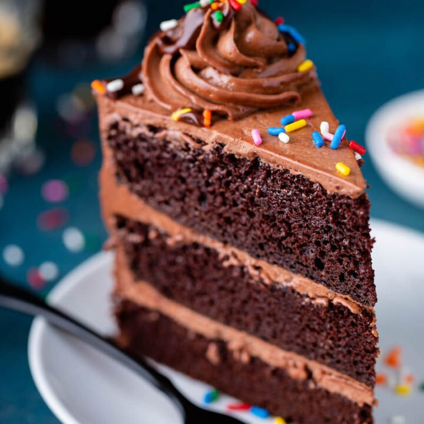

How to Make a Cake
This recipe will show you how to make your own cake. Follow Closely.
Ingredients
- 2 Cups of Flour
- 1/2 Cup of Sugar
- 1/4 Cups Brown Sugar
- 2 Eggs
- 1/4 Vegtable Oil
- Any Flavor icing
- One teaspoon of Vanilla Extract
- 3/4 teaspoon Baking Powder
- 2 teaspoons of Baking Soda
- 1 and 1/2 Cups Unsalted Butter
Instructions
- Preheat oven to 400 degrees Grease three 9-inch cake pans, line with parchment paper, then grease the parchment paper.
- Begin by mixing together 2 cups of flour and sugar together in a bowl
- Add eggs, oil, and brown sugar into the mixture and mix until smooth
- Using a handheld or stand mixer fitted with a paddle or whisk attachment, beat the butter and sugar together on high speed until smooth and creamy, about 3 minutes
- Pour batter evenly into cake pans. Weigh them to ensure accuracy, if desired. Bake for around 23-26 minutes or until the cakes are baked through. To test for doneness, insert a toothpick into the center of the cake.
- Take out the cake and let it cool for 1-2 hours.
- When the cake is completely cool, evenly spread the icing all over the cake with a spreading knife.
